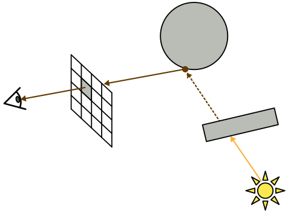
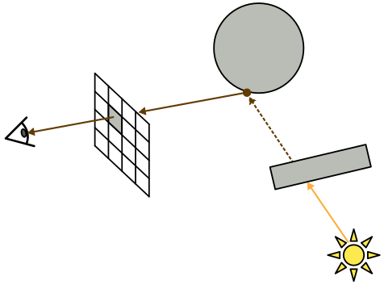

In this assignment, you will implement a real-time shadowing technique for multiple omni-directional point lights. We will be using a new framework code, but it should seem very familiar to you; it’s using the same libraries as the solar system codebase.
main.js.make_transformation_matrices function in mesh_render.js with your solution from GL2 where you set up mat_mvp, mat_model_view and mat_normals_to_view.Textures are an important tool in graphics. They represent per-pixel data such as surface colors, material parameters, or normals. They are often loaded from image files - you can see the texture files in the textures directory.
Let’s start by using textures to control the surface color of our objects.
A sky-sphere is a simple technique with spectacular results. We draw a simple sphere around the scene and color it with a texture representing the 360 degree view of scenery. There are many background panoramas available at https://hdri-haven.com or https://polyhaven.com/hdris.
Sampling a texture in GLSL is done with the texture function which returns a vec4:
vec2 uv = ...
texture2D(tex_color, uv)We ususally don’t need the 4-th component of this vector.
Edit shaders/unshaded.frag.glsl to sample the texture tex_color at the UV coordinates passed on from vertex shader and output the texture’s color.
The texture coordinates, often denoted UV, specifies the correspondence between mesh vertices and points on a texture. In the lecture we have seen how this allows us to map a face mesh onto a flat texture. Setting the vertex UV coordinates is part of the mesh creation process.
In this section we will modify the UV coordinates of a simple square mesh seen in the middle of the scene. We colored it with a tile texture, but we would like the tiles to repeat several times. The mesh UVs to be edited are in scene.js meshes_construct. Feel free to play with the UV coordinates and see what happens.
When reading from a texture, we provide the UV sampling coordinates. The image spans from [0, 0] to [1, 1] UV coordinates. As you can see, sampling within this range simply displays the image.
What happens when we sample beyond the range? That is decided by the texture wrapping mode. We have these modes available: clamp, repeat, mirror. [REGL doc]. Try them out to see which achieves the desired result.
meshes_construct in scene.js to repeat the texture 4 times.tex_load_options in scene.js to achieve a tiling floor.We are going to use environment mapping to achieve real-time reflections and shadows. An environment map captures a 360 degree view from a given point in the scene. It is somewhat similar to the sky-sphere texture, but instead of being stored in a single image, it is put in a cube-map. A cube-map is a 6-sided texture where each side looks in a different direction.
Because we are working with omnidirectional point lights, our situation is a bit more complicated. It’s not possible to set up a single view frustum to render the light rays emanating in all directions. Instead, we will set up different view frustums—one for each face of an imaginary cube surrounding our light—and take advantage of the GPU’s cube-mapping functionality.
One such frustum together with its corresponding shadow map is depicted in Figure below. Please note that, when the eye is placed inside the light cube to render the shadow map, we will refer to it as the light camera to distinguish it from the viewpoint used to render the image on screen.
face 3’s map is visualized. The coordinate axes indicate the orientation of the light camera used to render the shadow map; as usual for OpenGL, the camera looks along the -z axis. (b) The resulting shadow map texture (darker is closer).
A cube map texture is really a collection of textures that are conceptually attached to the faces of a cube. Instead of sampling this cube map with 2D texture coordinates , you sample it with a 3D vector ; the GPU then returns the color of the point on the cube where this 3D vector pierces through:
This sampling mechanism is a perfect fit for our shadow mapping problem: if we sample the cube map with the shadow ray vector pointing from the light to , it will pull out the intersection distance value for this ray (as long as we correctly rendered each face’s shadow map).
The texture images making up the cube map are oriented as follows:
They are wrapped around the cube as shown in Figure 2. An example of how these shadow maps will be drawn is shown in Figure 1.


Start by constructing the cube_camera_projection matrix in env_capture.js.
Note that the shadow map cube model assumes the light is positioned at the center of the cube. Given such a geometry, think of what aspect ratio and field of view properly define the light camera’s view frustum as visualized in Figure 1. The near/far parameters control the minimum and maximum distances at which you can compute shadow ray intersections. For this scene, you can use and respectively.
Complete the function init_capture in env_capture.js. Use mat4.perspective to produce the projection matrix for a camera whose center lies at the center of a cube and whose image plane is a cube wall. Choose the correct field-of-view angle and aspect ratio.
Next, the cube_camera_view function constructs the view matrix for the light camera looking through side side_idx (in 0..5) of the shadow map cube. This the matrix representing the transformation from the world coordinate system to the coordinate system for the light camera.
Note that the orientation of the shadow map cube itself (i.e., the shadow map cube coordinate system) must always be aligned with current eye coordinate system (see Figure 3 (a))! This will allow you sample the cube map texture directly with the light vectors calculated in your Phong shader (since your lighting calculation is done in eye space). Therefore, the cube_camera_view matrix uses the current eye’s view matrix.
We are also using the function mat4.lookAt to point the camera through the specified cube face. See Figure 3 (b-d) for example light camera orientations.
Please set up the up vectors for the lookAt function for each face by studying Figure 2.
Edit the up vectors CUBE_FACE_UP in env_capture.js to point the camera through the specified cube faces. Please check that your scene capture visualization (bottom left) matches the reference image.
In the previous part we have captures a view from a particular point in the scene into a cubemap. Sampling this cube-map allows us to recover the light ray coming from that direction. We will use it to implement real-time reflections.
The idea is similar to reflections in assignment RT2. There we could run the ray tracer to shoot a ray in any direction. In the rasterization pipeline we have to draw whole objects from a fixed viewpoint. Thus the environment-map will serve as an approximation of the ability to shoot rays.
The approximation relies on an assumption that the shiny object is small compared to the whole scene. We capture the view from the center of the object and hope that it is not significantly different from the view from the object’s surface.
Sampling a cube-map is similar to sampling a texture but takes a 3D vector instead of 2D UV:
vec4 result = textureCube(cube_env_map, direction_vec3);Edit the reflection shaders mirror.vert.glsl and mirror.frag.glsl to implement the environment-map based reflections.
Recall the Phong illumination model you’ve used in the previous assignments:

where the final fragment’s intensity, , is computed adding specular and diffuse contributions from each light, , atop the ambient contribution. Here is the ambient light intensity, is diffuse/specular intensity of light source , is the ambient/diffuse/specular component of the material, is the shininess, and are the normal, light, half-vector, and view vectors respectively.
In this implementation, we simplify m_s = m_d = material_color where the color is sampled from a provided texture. We set m_a = 0.1.
Remember that, in the second raytracing assignment, you computed shadows by neglecting the contributions from lights that are obscured by other scene geometry. To do this, you cast a shadow ray from the point being lit, '''', to the light to check if there was an intersection between the two.
An equivalent formulation of this test, which we will see is more compatible with the WebGL/regl rasterization pipeline, is to instead cast a ray from the light toward the point and check if there is any intersection closer to the light than is. If so, then is in a shadow, and no diffuse or specular components from this light should be added.
 

The nice thing about this new shadow test formulation is that determining the first intersection of a whole frustum of rays with a scene is exactly the problem GPU rasterization pipeline solves: we can simply render the scene from the perspective of the light to determine the distance of the closest intersection along every light ray. The resulting grayscale image of distance values is called a shadow map:


Then, when computing the lighting for point , we can compare its distance from the light against the corresponding ray’s intersection distance value stored in this shadow map. This test involves only an efficient, constant-time texture look-up operation.
Shadow mapping implementations traditionally store the depth buffer (or z-buffer) value in the shadow map. However, for omnidirectional lighting, it will be simpler to instead work with the Euclidean distance from the light to the intersection point. When we switch to the shadow mode, the cubemap visualizer shows the shadow map.
With this approach, we need the following multi-pass rendering process:
for all rasterized framgents p:
I(p) <- ambient_contribution
for all lights l in the scene:
draw shadow map for l by computing distances to each fragment seen by l
for all rasterized fragments p:
if length(p - l.pos) < shadowmap_depth:
I(p) <- I(p) + diffuse_contribution(p, l)
I(p) <- I(p) + specular_contribution(p, l)
In our implementation, the loops over rasterized fragments will be executed by the fragment shader src/shaders/phong_shadow.frag.glsl. The shadow map distance values are written by ..src/shaders/shadowmap_gen.frag.glsl.
Edit shaders/phong_shadow.vert.glsl and shaders/phong_shadow.frag.glsl to implement Phong lighting with shadows. It is quite similar to the Blinn-Phong shader from GL2 but with several differences:
mat_model_view * vpos) to the fragment shader. We will use it in the fragment shader to calculate the view direction, lighting direction, and distance between fragment and light. Therefore we no longer need to pass view and lighting directions to the fragment shader.light_colors have high values to account for the attenuation. Without the attenuation implemented, your image will be oversaturated.cube_shadowmap shadow map to test whether the fragment is under shadow; your shader should only output a nonzero color if the light is visible from the fragment. You can use the GLSL function textureCube to sample the cube map texture using a vector. Mitigations against shadow acne might be needed.In mesh_render.js, SysRenderMeshesWithLight::init_pipeline set the blending mode of the pipeline.
We need each iteration of our loop over the lights to add to the current image, not overwrite it. This can be accomplished by enabling blending and appropriately configuring the blend function. You will want to change the blend field to look like:
blend: {
enable: true,
func: {
src: sfactor,
dst: dfactor,
},
},which corresponds to a call to the OpenGL function glBlendFunc(sfactor, defactor). To determine the correct arguments to pass as sfactor and dfactor, please study the OpenGL reference page and think about how to make the blend operation add the source and destination values. You may also find it useful to read the regl documentation on blending here.
Now, with this last task finished, you should see the following result:

A .zip compressed file named ExerciseGL3-GroupG.zip, where N is the number of the current exercise sheet, and G is the number of your group. It should contain:
readme.txt file, following this scheme (sciper in parentheses):.zip archive, no .rar please.Submit solutions to Moodle before the deadline. Late submissions receive 0 points!